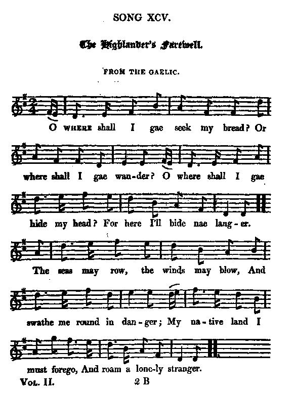

Highlander's Farewell
L'Adieu du Highlander
A song on emigration
Tune - Mélodie
"The Highlander's Farewell"from Hogg's "Jacobite Relics" 2nd Series N°95 page 185, 1821
Sequenced by Christian Souchon

|
To the tune:
"I have entirely forgot who it was that translated this beautiful song for me, as well as where I picked up the air ; and now, that I see them in the running copy, they appear to me as if I had never seen either of them before." Hogg in "Jacobite Relics", volume 2. (King) Alexander McGlashan's "Collection of Strathpey Reels" (1778-1781) is sometimes quoted as recording the first printed occurrence of this tune. However the ABC notation of McGlashan's melody found at "www.thesession.org" is clearly different. In fact it is the tune to the song My Harry was a gallant gay" , titled "Highland Watch's Farewell to Ireland". |
A propos de la mélodie:
"J'ai complètement oublié qui m'a traduit ce beau chant et où j'ai trouvé l'air. Je découvre l'un et l'autre dans l'épreuve de correction et j'ai l'impression de ne les avoir jamais vus". Hogg in "Jacobite Relics", volume 2. On écrit parfois que le recueil de (King) Alexander McGlashan, "Collection of Strathpey Reels" (1778-1781) renfermerait la première version imprimée de ce morceau. Le site "www.thesession.org" donne la transcription ABC de la mélodie de McGlashan: C'est celle qui accompagne My Harry was a gallant gay" et dont le titre est "Highland Watch's Farewell to Ireland". |

|
THE HIGHLANDER'S FAREWELL
From the Gaelic (*) 1. O where shall I gae seek my bred? Or where shall I gae wander? O where shall I gae hide my head? For here I'll bide nae langer. The seas may row, the winds may blow, And swathe me round in danger, My native land I must forego, And roam a lonely stranger. 2. The glen that was my father's own, Must be, by his, forsaken, And the house that was my father's home Is leveled with the brake. Ochon ochon, our glory's oer, Stole by a mean deceiver, Our hands are on the broad claymore, But might is broke forever. 3. And thou my prince, my injured prince, Thy people have disowned thee, Have hunted and have driven thee hence With ruined chiefs around thee. Though hard beset, when I forget Thy fate, young helpless rover, This broken heart shall cease to beat And all its griefs be over. 4. Farewell, farewell, dear Caledon Land of Gael no longer! A stranger fills thy ancient throne, In guile and treachery stronger. Thy brave, thy just, fall in the dust, On ruin's brink they quiver, Heaven's pitying ee is closed on thee, Adieu, adieu forever. (*) "From the Gaelic": see note to McLean's Welcome |
L'ADIEU DU HIGHLANDER
Traduit du gaélique (*) 1.Où donc trouverai-je un frêle abri? Où chercher ma pitance? Si je ne peux demeurer ici, Il me reste l'errance. Je m'abandonne au gré des vents, A l'océan qui gronde. Adieu, la terre de mes parents, Je vais courir le monde. 2. Tous ces champs que possédait mon père, Moi, son fils, j'y renonce. Et les murs qui jadis l'abritèrent Croulent, couverts de ronce. Hélas, notre gloire est passée, Un traitre l'a flétrie. A quoi bon se saisir de l'épée D'une main engourdie? 3. Quant à toi, notre Prince outragé Qu'un peuple entier déserte, Toi que l'on a traqué, puis chassé Avec nos anciens maîtres. Sache que dans l'adversité, Je pense à ta détresse. Tant que la vie ne m'a point quitté Ma douleur n'a de cesse. 4. O! ma chère Ecosse, tu n'es plus Une terre Gaëlle, Car sur ton trône, c'est un intrus Qui siège par cautèle. Braves et justes ont péri. Pour te perdre on s'agite. La Fortune a d'autres a souri. A jamais je te quitte. (*) "Traduit du gaélique": cf. note concernant Bienvenue chez McLean (Trad. Ch.Souchon (c) 2004)
|
|
The
emigration movement
reached its climactic point in the 1770’s. Wherever he went, Dr Samuel Johnson, autor of "A Journey to the Western Isles of Scotland" in 1773, when the "pacification" was crushing the Clan system and Gaelic culture, found people contemplating emigration. The desire to emigrate was reflected in the popular lyrics of the day and in ballads which proclaimed the glories of the New World. Farewell laments like this one were set to melodies and widely distributed. On the island of Skye, in 1774, the inhabitants had a dance called “America.” "Each of the couples successively joins a whirling circle, till all are in motion; and the dance seems intended to show how emigration catches, till a whole neighbourhood is set afloat. All ages are captured in this emigration frenzy. A company from Strathspey in Inverness included a woman of 83 years, on foot, with her son before her playing
Tullochgorum
on his bagpipes; some of them had children of a month old, which the fathers carried on their backs in a "skull" or wooden basket".
Another Highland dance popular at the time included the words ‘Going to seek a fortune in North Carolina’” |
Le
mouvement d'émigration
fut le plus intense dans les années 1770. Partout où il allait, Samuel Johnson, auteur du "Voyage dans les Hébrides" en 1773, alors que la "pacification" était en train d'anéantir le système des Clans et la culture gaélique, il trouvait des gens sur le point de s'expatrier. Le désir d'émigrer se reflétait dans les textes des chansons en vogue et dans les ballades à la gloire du Nouveau Monde. Des complaintes d'adieu comme celle-ci étaient composées sur des mélodies connues et largement diffusées. Sur l'Ile de Skye, en 1774, les habitants exécutaient une danse nommée “l'Amérique.” "Chaque couple rejoignait tour à tour une ronde et à la fin tout le monde dansait; l'objet de la danse était de montrer la propagation de l'épidémie d'émigration, jusqu'à ce que tout un canton ait pris la mer. Aucun âge n'était épargné par cette frénésie. Une groupe venu de Strathspey à Inverness comprenait une femme de 83 ans sur le départ, suivant son fils qui jouait
Tullochgorum
sur sa cornemuse; d'autres incluaient des enfants d'un mois, que leurs pères portaient sur leurs dos dans un "skull" ou hotte en bois".
Une autre danse en honneur dans les Highlands à cette époque disait ‘Nous partons chercher fortune en Caroline du Nord'.” |